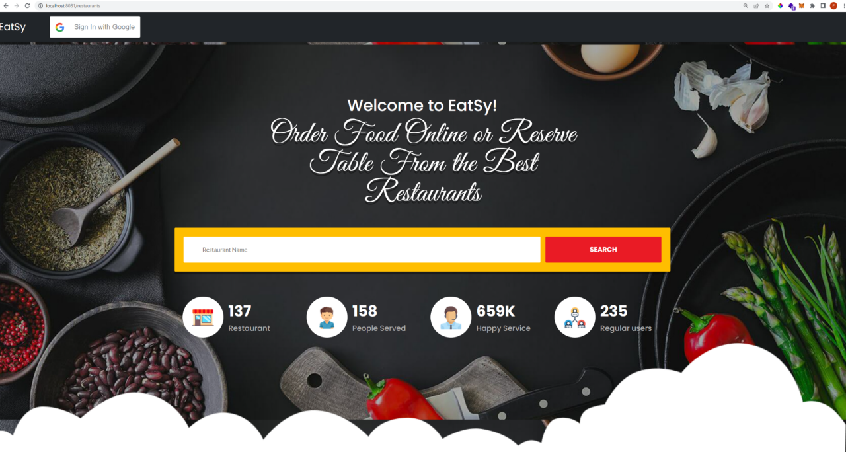

Projects
- EaTsy——Online Restaurant Management System in Java
Github URL

- Design and develop a comprehensive online order system that combines restaurant and customer management.
- Generated the web application combining Spring Boot and React. Built front-end pages with React and React-Router and Axios.
- Implement restaurant management, table reservation, order and menu management, food carts, and Covid vaccination check.
- Built an API server with Express and integrated data by CRUD of MongoDB, realizing front-end and back-end interaction.
- Multi-user File System & File Manager in Java
- Implement a virtual FAT filesystem in memory
- Implement a file manager based on the filesystem above that supports multi-user file operations, e.g. creation, deletion, and user login
- Online Bookstore Website
- Design and develop an E-commerce online Bookstore website with various features including personal account management, shopping cart, and wish list
- Implement user registration, login, authorization, and authentication
- Design the database schema in MySQL and expose CRUD APIs in Java